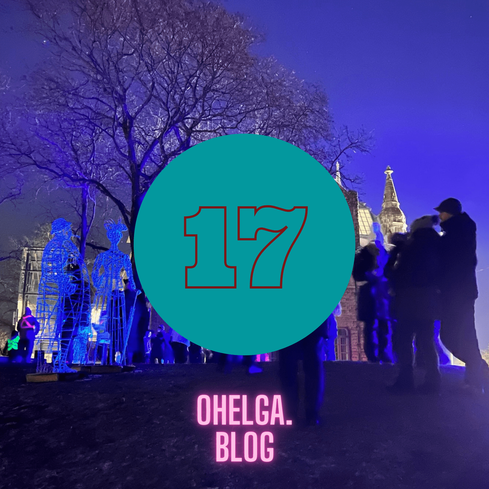

Ännu en koppling mellan O helga natt och Eurovision Song Contest. Tomi saa fantasia ja satumaa -fiilis tästä sokeriäänestä.
Apple Music:
Saara Aalto (feat. Linda Lampenius) - O Holy Night
Spotify:
Saara Aalto (feat. Linda Lampenius) - O Holy Night

Kommentit / Kommentarer (1)
<p>Näe, sexa. Disney Frozen-version. Näpen röst, men räckte inte riktigt till.</p>